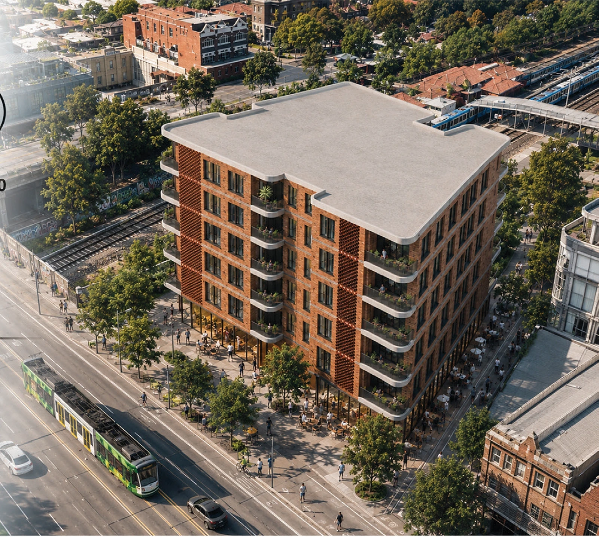
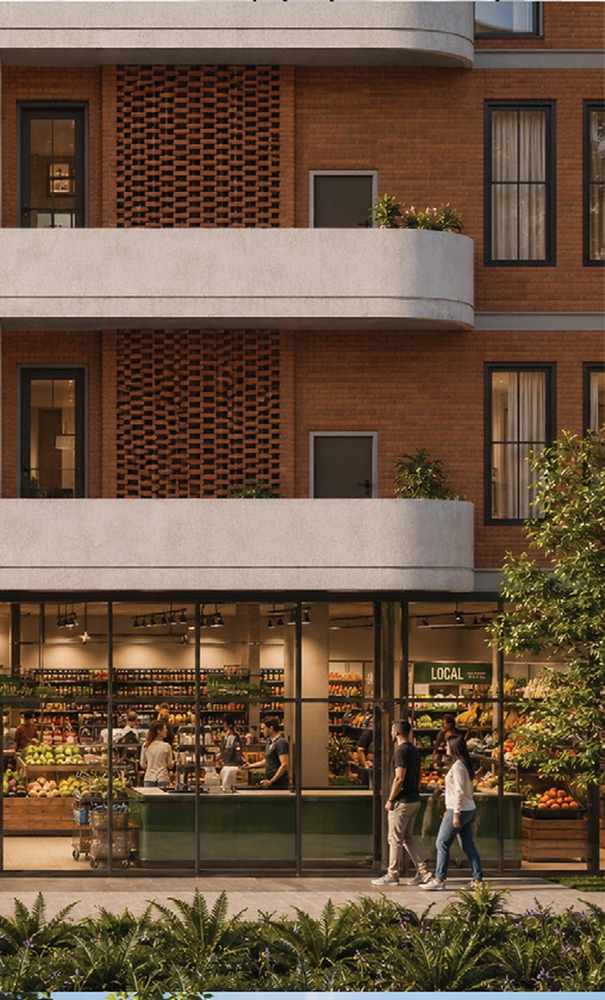
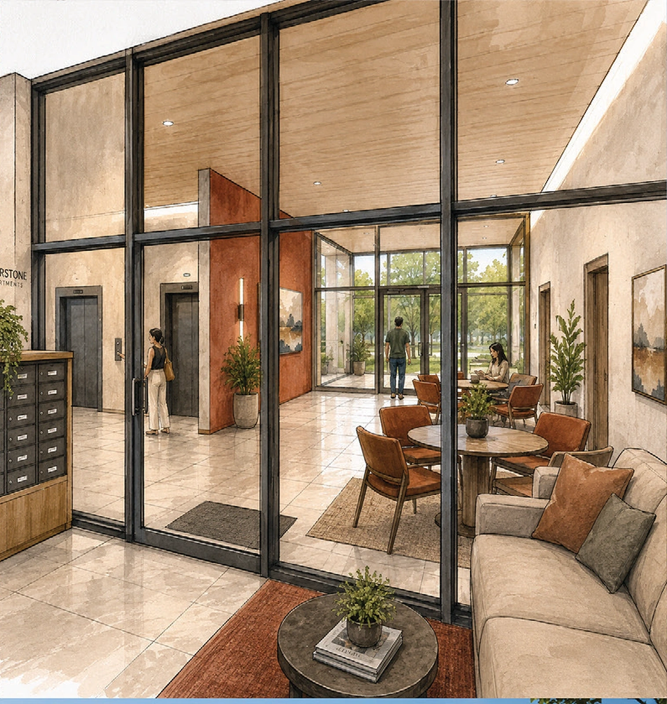

Camberwell Housing
From the street to the home.




From the street to the home.
An apartment proposal on a triangular site beside Camberwell Station and Burke Road. The final scheme combines a planted forecourt and retail frontage with repeated residential levels, projecting balconies and a legible circulation system.
Resolve the relationship between a triangular urban site, a public street edge and private dwellings above.
A clear idea.
Spatial consequences.
Read the scheme in three layers: a public ground, residential floors above, and the vertical and horizontal circulation connecting them.
Final Week 13 site board, typical plan, programme section, exploded circulation diagram and street/interior views.
The drawing room.
Plans and sections reveal
what an image can't.
Final source site plan with station and street context.
Original annotated plan / not to scale.
Source final-scheme aerial perspective.
From the inside.
Material, light and the
scale of occupation.
Project context and image notes
RMIT housing studio / Week 13 final scheme. Retrospective reading of the final drawings, not a documented options-testing timeline. No daylight, yield, accessibility or fire-compliance result is inferred.
Images marked AI-assisted are presentation studies. Original drawings remain the reference for dimensions, labels and geometry.